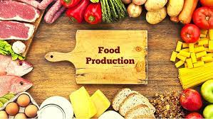
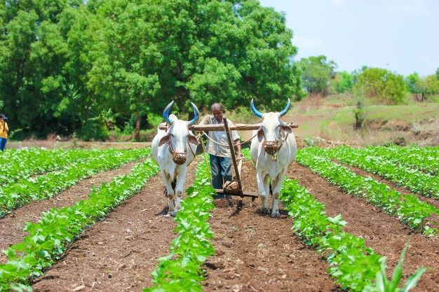
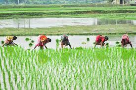
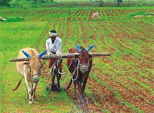

About Us
Introduction
Food resources production is a fascinating and essential aspect of our world. It encompasses a wide range of activities and processes involved in cultivating, harvesting, and processing food to meet the nutritional needs of a growing population. From traditional farming methods to modern agribusiness and sustainable practices, the world of food production is constantly evolving.
Farmers, agricultural scientists, and food producers play crucial roles in ensuring a steady and diverse supply of food. The process involves various stages, including soil preparation, planting, irrigation, pest control, and harvesting. Advancements in technology have led to innovations such as precision farming, hydroponics, and genetic modification, which aim to enhance productivity and sustainability.
Global food production is influenced by factors like climate, geography, and socio-economic conditions. Issues such as food security, environmental impact, and equitable distribution of resources also come into play. Striking a balance between meeting the nutritional needs of the present and ensuring the sustainability of future generations is a complex challenge that requires collaboration and innovation.
Overall, food resources production is a dynamic and multifaceted field that intersects with various disciplines, shaping the way we cultivate, process, and consume the food that sustains us.

Comprehensive Literature Review
A comprehensive literature review on food resources production would cover a range of topics related to agriculture, sustainability, technology, and global food systems. Here's a brief overview of key themes and potential sources for a literature review:
1.Sustainable Agriculture:
Explore literature on sustainable farming practices that aim to minimize environmental impact while maintaining productivity.
Sources: "Sustainable Agriculture" by J. Pretty, "Agroecology: The Ecology of Sustainable Food Systems" by S. Gliessman.
2.Technological Innovations in Agriculture:
Investigate how technology, including precision farming, genetic modification, and automation, is influencing food production.
Sources: "Digital Agriculture" by P. Gong, "The Gene Revolution in Agriculture: Policies for Developing Countries" by M. Qaim.
3.Climate Change and Agriculture:
Examine how climate change is affecting food production, including changes in growing seasons, water availability, and the spread of pests and diseases.
Sources: "Climate Change and Agriculture: An Economic Analysis of Global Impacts, Adaptation, and Distributional Effects" by R. Mendelsohn et al., "Food Security and Climate Change: An Integrated Approach" by M. B. Araujo et al.
4.Global Food Security:
Analyze literature addressing the challenges of global food security, considering issues of access, availability, and utilization of food resources.
Sources: "Global Food Security: Ethical and Legal Challenges" by M. L. Chadwick, "World Agriculture: Towards 2015/2030 - An FAO Perspective" by Food and Agriculture Organization (FAO).
5.Supply Chain and Food Distribution:
Investigate studies on the efficiency and equity of food distribution systems, including challenges in transporting and storing food.
Sources: "Food Wars: The Global Battle for Mouths, Minds and Markets" by T. Lang, "Food Supply Chain Management" by M. Christopher.
6.Social and Economic Aspects of Food Production:
Explore literature discussing the socio-economic impact of agricultural practices on rural communities and the global economy.
Sources: "The Role of Agriculture in Economic Development" by E. Boserup, "Agriculture and Economic Development" by C. Peter Timmer.
7.Policy and Governance:
Examine research on agricultural policies and governance structures that influence food production and distribution.
Sources: "Agricultural Governance: Globalization and the New Politics of Regulation" by V. Higgins and G. Lawrence, "Food Policy for Developing Countries: The Role of Government in Global, National, and Local Food Systems" by P. Pinstrup-Andersen.
Result
1. Crop Yields and Agricultural Practices:
>Describe the crop yields observed in different regions or under specific farming practices.
>Highlight any significant variations in yields and potential contributing factors.
>Discuss the impact of innovative agricultural practices or technologies on productivity.
2. Livestock Farming:
>Present data on livestock production, including growth rates, feed conversion ratios, and disease prevalence.
>Discuss any observed differences between traditional and modern livestock farming methods.
>Highlight any challenges or opportunities identified in the livestock sector.
3. Aquaculture Production:
>Report on the yields and growth rates of various aquaculture species.
>Discuss the sustainability of aquaculture practices employed and their environmental impact.
>Present any findings on disease management and water quality in aquaculture systems.
Discussion
1. Crop Production:
-Advancements in Agricultural Practices: The continuous evolution of agricultural practices, including precision farming, genetically modified organisms (GMOs), and sustainable farming techniques, has significantly impacted crop production.
-Crop Yields and Efficiency: Increasing crop yields per unit of land through technological innovations has been crucial in meeting the demands of a growing global population.

2. Sustainable Agriculture:
-Environmental Concerns: While increased productivity is essential, there is a growing recognition of the environmental toll of conventional farming, including soil degradation, water depletion, and biodiversity loss.
-Transition to Sustainable Practices: The shift towards sustainable agriculture, incorporating organic farming, agroforestry, and permaculture, emphasizes the need to balance production with long-term environmental health.

3. Climate Change Impact:
-Vulnerability of Agriculture: Climate change poses significant challenges to food production through altered precipitation patterns, extreme weather events, and changing growing conditions.
-Adaptation and Resilience: The discussion involves strategies to make agriculture more resilient, including the development of climate-resistant crops, water-efficient irrigation systems, and climate-smart agricultural practices.
4. Livestock Farming:
-Efficiency and Ethical Concerns: Advances in livestock farming have led to increased efficiency, but ethical concerns regarding animal welfare, antibiotic use, and environmental impact have become prominent.
-Alternative Proteins: The emergence of alternative proteins, such as plant-based and lab-grown meats, is reshaping the discussion, offering solutions to mitigate the environmental impact of traditional livestock farming.

5. Aquaculture:
-Expanding Role: Aquaculture plays an increasingly important role in meeting global demand for seafood, but challenges include disease management, environmental impact, and the sustainability of feed sources.
-Innovations and Sustainability: Technological innovations in aquaculture, such as recirculating systems and sustainable feed practices, are discussed in the context of promoting responsible and sustainable seafood production.
Conclusion
In conclusion, the discussion on food resources production underscores the multifaceted challenges and opportunities inherent in sustaining a growing global population. While advancements in agriculture, livestock farming, and aquaculture have significantly increased food yields, there are pressing concerns related to environmental impact, climate change, and equitable distribution. The move towards sustainable and resilient practices, such as organic farming, agroforestry, and alternative protein sources, reflects a commitment to address these challenges.
The impact of climate change on agriculture and the broader food system emphasizes the need for adaptive strategies and innovations. Developing climate-resilient crops, promoting water-efficient farming techniques, and embracing precision agriculture are essential steps toward ensuring food security in the face of changing environmental conditions.
Livestock farming, a crucial component of global food production, faces ongoing debates regarding intensification, animal welfare, and environmental sustainability. The exploration of alternative protein sources and sustainable livestock practices showcases the industry's responsiveness to societal and environmental concerns.
In aquaculture, the expansion of the industry presents both opportunities and challenges. While technological innovations improve efficiency and disease resistance, careful consideration of environmental impacts and responsible management practices is vital to ensure the long-term sustainability of seafood production.
Reference
Books:
The Omnivore's Dilemma by Michael Pollan: Explores the impact of food production systems on the environment and human health.
Diet for a Small Planet by Frances Moore Lappé: Discusses the environmental impact of food choices and resource utilization.
Websites:
World Food Programme (WFP): Reports on global hunger and food security.
United Nations Development Programme (UNDP): Offers insights into sustainable development goals, including those related to food security
Our Story
We always wanted to make a website that would help people learn about food resources production and sustainability. We were passionate about this topic because we grew up in a rural area where farming was the main source of income and livelihood for our family and community. We knew how important it was to produce food in a way that would not harm the environment or deplete the natural resources.
That’s why we started a Food Resources Project, a team of students who shared the same vision. We wanted to create a website that would educate and inspire people to adopt more sustainable and healthy food practices. We also wanted to showcase the stories and achievements of farmers and food producers who were making a positive impact on the world.
We divided the work among ourselves according to our skills and interests. It was not easy to create a website from scratch. We faced many difficulties and obstacles along the way. Sometimes we disagreed on the design or the content of the website. Sometimes we encountered technical glitches or bugs that delayed our work. But we never gave up. We supported each other and helped each other overcome the problems.
After a few days of hard work, we finally launched our website.
Our Vision
We learned a lot from this project.We celebrated our success and thanked each other for our collaboration and contribution. We realized that we had not only created a website, but also a friendship and a community. We decided to continue working on our website and update it with new content and features. We also decided to expand our network and reach out to more people and organizations who shared our mission and vision. We learned how to work as a team and how to use our skills and talents for a good cause. We learned how to create a website that would make a difference in the world. We learned how to be responsible and respectful food citizens.We hope that our website will inspire and empower more people to join us in our journey of food resources production and sustainability.
Our Team
Garima,Registration no.12303645,Roll No 33,Role of Member: Website
Gurajala Purna Vidyadhar,Registration no.12302837, Roll No 72, Role of Member: Work Plan
Vijeta ,Registration no. 12304345,Roll No 34,Role of Member : Report writing